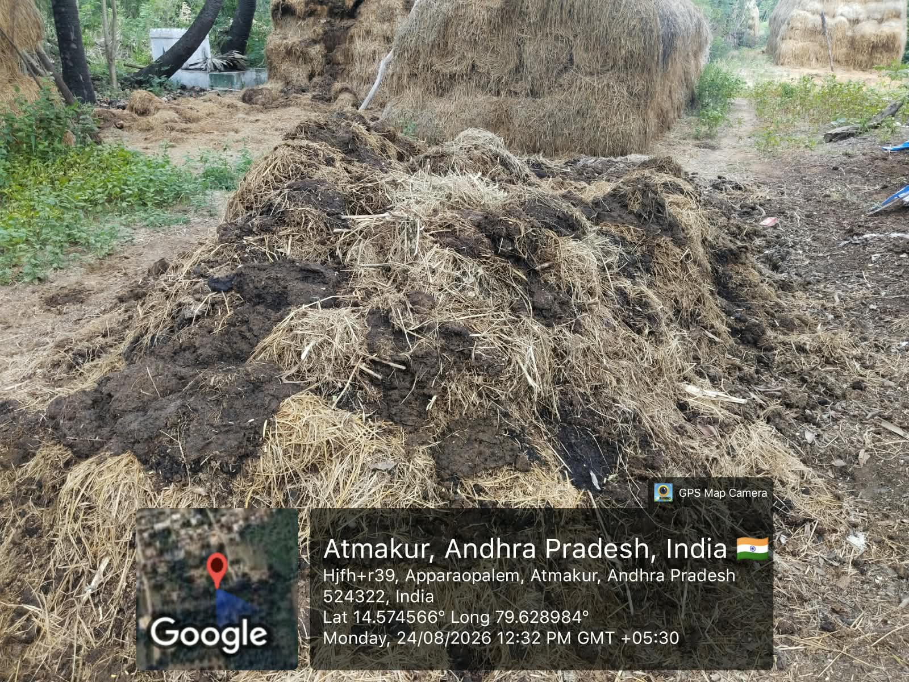
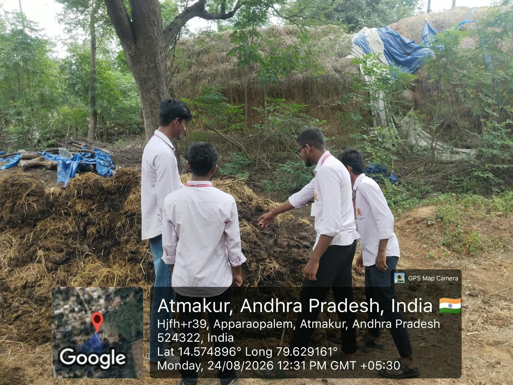
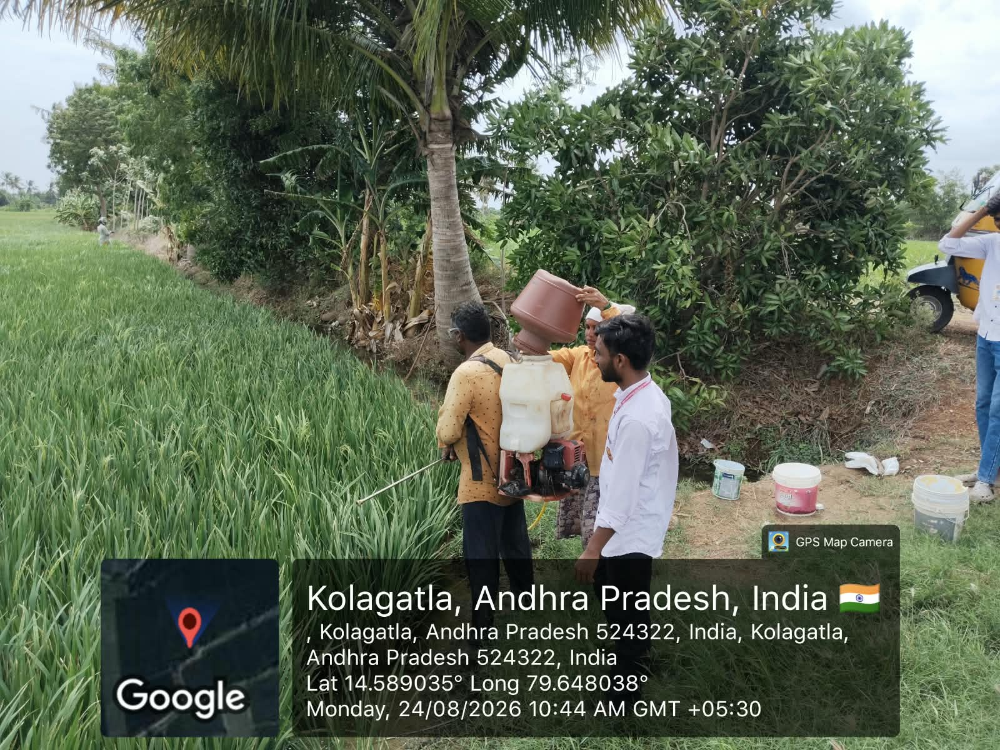
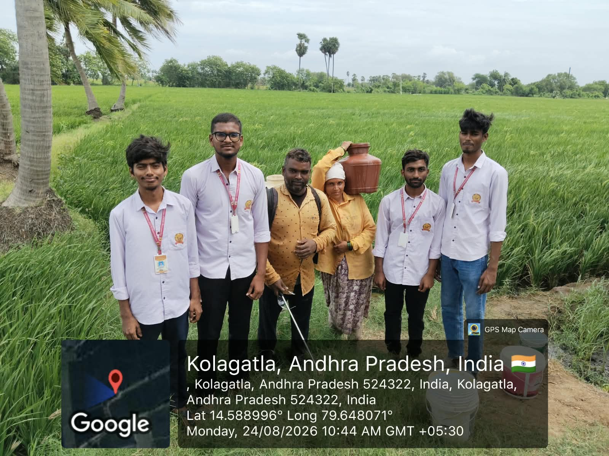
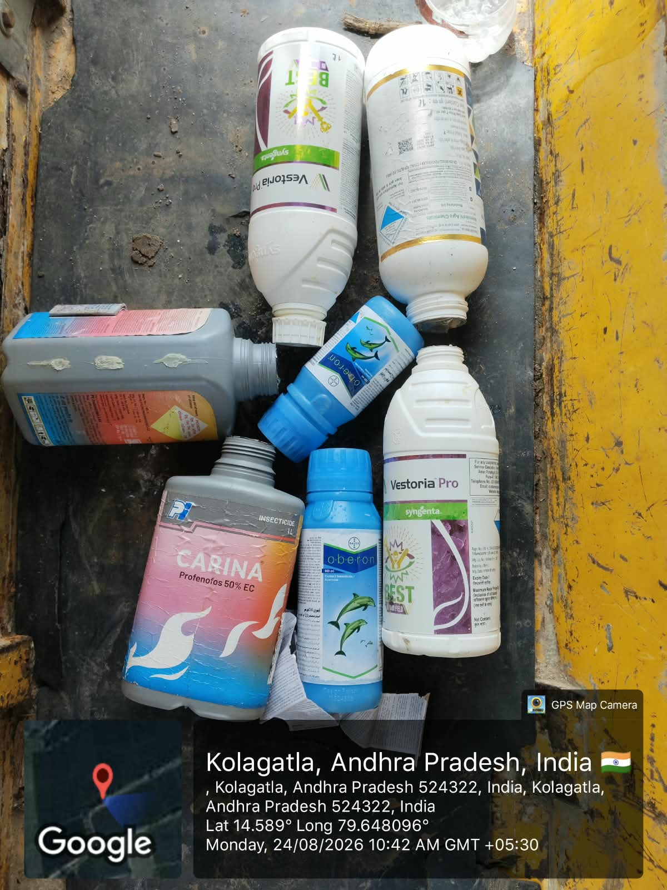
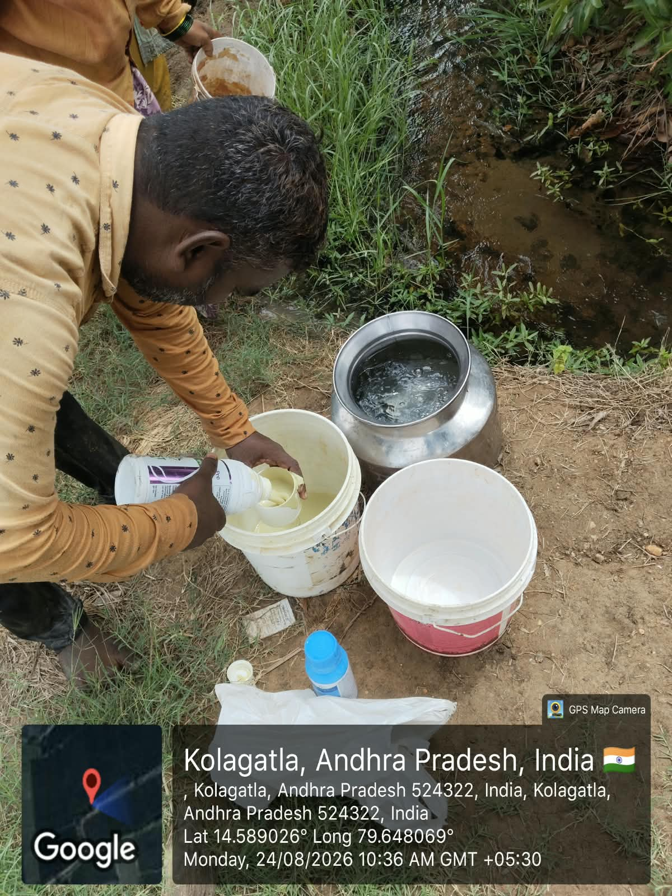
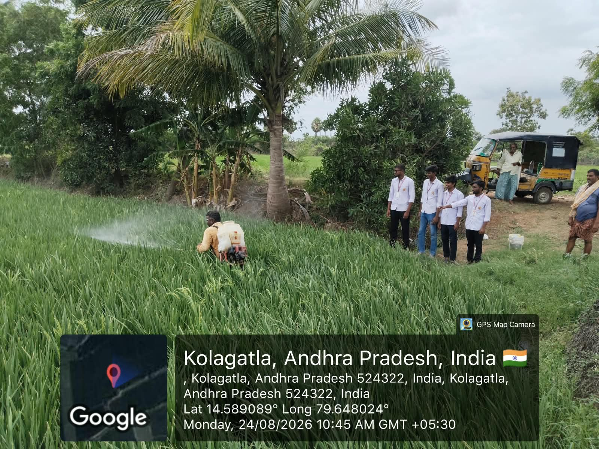

Community Service Project
Week 5 Report
Studying compost, natural inputs and farmer-led crop protection practices.
| Day | Activity | Observations / Notes |
|---|---|---|
| Day 1 | Visited the compost and manure preparation area. | Observed the storage of straw, dung and decomposed organic material used for soil improvement. |
| Day 2 | Studied compost preparation. | Learned how organic material is handled and prepared before it is taken to the paddy field. |
| Day 3 | Observed preparation of a natural crop input. | Watched farmers measure and mix the input with water near the field channel. |
| Day 4 | Observed field application. | Learned how a prepared input is applied across the paddy crop using a sprayer. |
| Day 5 | Discussed organic crop protection with farmers. | Recorded how manure, careful input preparation and timely field application support crop health. |
Image Gallery






